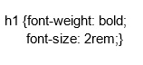

På denna webbsida besvaras frågor om tre delar imon webbteknik. Varje del har två frågor eller mer.
F3: CSS
Vad är en regel i CSS och vad består den av?
En regel i CSS delas upp i två delar. Den första delen är en så kallad selektor, den andra delen kallas för
deklaration, en regel kan bestå av flera olika selektorer samt deklarationer. Selektorn bestämmer vilka
element i html-dokumentet som regeln ska gälla för och deklarationen bestämmer hur det selekterade elementet
ska stilsättas. Efter denna text kommer ett exempel på en regel i CSS där samtliga h1-element i
html-dokumentet får textstorleken 2rem och blir i fetstil, h1 är selektorn och font-weight samt font-size är
deklarationer. Se bild nedan.

Vad är skillnaden mellan id och class? När bör man använda id respektive class?
Både id och class används i CSS för att referera till olika element i HTML-dokumentet. En class kan
innehålla flera olika element medans ett id endast refererar till ett element. Class ska därför användas om
man vill markera flera olika element som en och samma class och sedan kunna referera till den classen för
att css-regeln ska gälla samtliga markerade element. Id används istället om man endast vill markera ett
element och referera till det specifika elementet, man kan exempelvis ha ett id inom en class-markering för
att få sitt id att se ut på ett sätt som skiljer sig från resterande del av den classen man markerat.